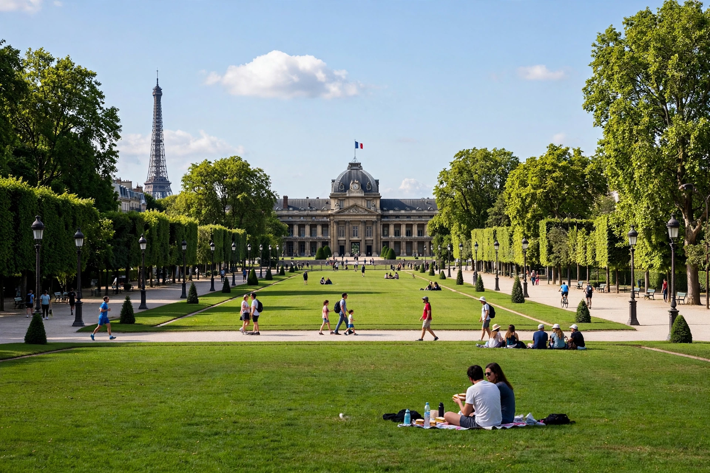

The Champ de Mars is a large public greenspace in Paris, in the 7th arrondissement, between the Eiffel Tower to the northwest and the École Militaire to the southeast. It is named after the Campus Martius in Rome.

| Location | 7th arrondissement, Paris |
|---|---|
| Area | 24.5 ha |
Laid out in 1751 as a parade and training ground for the École Militaire, it hosted the Fête de la Fédération in 1790, the Champ de Mars massacre of 1791, and several Expositions Universelles (1867, 1878, 1889, 1900), for which the Eiffel Tower was built in 1889 as the entrance arch. Today its lawns and allées are a popular place for picnics, concerts and national celebrations, with a direct view of the tower.